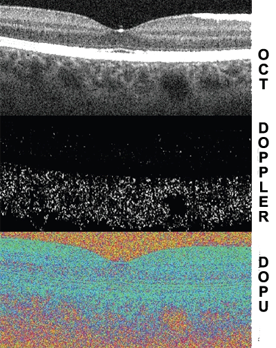
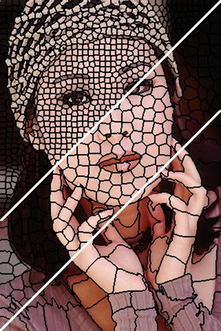

Superpixel analysis of MC-OCT
Motivation
Multi-contrast Jones matrix tomography (MC-JMT) is a variant of optical coherence tomography, which provides a structural OCT, Doppler OCT and polarization sensitive OCT by a single volumetric scan. Recent development of advanced MC-JMT has enabled clinical examination of posterior eye and MC-JMT showed its high clinical utility. Since MC-JMT provides multiple images with multiple contrasts, a clinician is required to read and understand all images with multiple contrasts properly in order to utilize the full advantage of the multi-contrast images. It is, in practice, time consuming and the learning curve of the images reading skill is steep. And hence a proper automated analysis for multi-contrast images is required.So to extract a better use of the images and the information that is contained in MC-JMT data, here we demonstrate a new five-dimensional (5-D) image analysis method.

Fig.1 - MC-JMT image showing the optical features.
Methodology
Our strategy for the image processing of MC-JMT consists of three steps. In the first step, all the MC-JMT
pixels are clustered in a 5-D feature space where the features are the three optical features and two spatial positions, i.e.,
transversal and depth-positions. The clusters obtained in this step are utilized as ROAs in the subsequent steps. In the
second step, the optical features are averaged over each ROA, i.e., cluster. This averaging reduces the variation of optical
properties within each tissue type. Finally, in the third step, the clusters of the pixels are classified into several tissue
types by a decision-tree algorithm which is a threshold based step-wise classification using the three optical properties.
First Step
The multi-contrast signal obtained by the MC-JMT was analyzed by a modified superpixel algorithm which is based on SLIC superpixel algorithm.

Fig.2 - Output of SLIC Superpixels.
The SLIC superpixel algorithm has been developed to analyze a standard digital color image. In this algorithm,
clusters of pixels, so called as superpixels, are generated by clustering pixels based on their color similarity and spatial
proximity in a 5-D feature space. The 5-D feature space constitutes the three color parameters in the CIELAB color
space and the two spatial coordinates of the given color image.
 The tissue classification was done by a decision-tree algorithm described as follows in this Publication
The tissue classification was done by a decision-tree algorithm described as follows in this Publication
Second Step
After obtaining the superpixels in the first step, the scattering OCT intensity, power Doppler and DOPU signals are averaged within each superpixel. It is noteworthy that the averaged power Doppler signal equals to the local variance of Doppler phase shift under assumption of zero-mean of Doppler phase shift.Third Step
The each superpixel was classified into four tissue classes; blood vessels, retinal pigment epithelium (RPE), exudation, and other tissue. The superpixel which was classified into none of these four classes is classified as noise class.
Fig.3 - Tissue Classification.
Conclusion
This analysis provides clusters of MC-JMT pixels and the clusters are utilized as region-of-interest (ROI) for further image processing. In particular, this ROI is utilized for averaging of MC-JMT image. The averaging found to reduce the noise and speckle of the MC-JMT as preserving significant structural features of a sample. The averaged MC-JMT data is further processed by a simple decision-tree based tissue classification algorithm. Qualitative assessment showed the improvement of sensitivity and specificity of the tissue classification by the 5-D analysis and consequent averaging.
Fig.4 - Comparison based on number of Superpixels.
With the increase in the number of superpixels, we can increase the reliability over the structural features of the MCJMT
images. This is evidently shown in the Figure 4.
One evident shortcoming of our current implementation is the unoptimized definition of the distance in the 5-D feature space. Further development of a method which strategically optimizes the balance among the features in calculation of the distance would provide more appropriate ROA.
The ROA obtained by superpixel analysis is applicable to not only averaging but also other types of local statistics. It would be useful, in the future, for quantification of multi-contrast OCT images, such as quantification of birefringence or Doppler flow, where definition of local region to calculate local statistics directly affects to the quantification accuracy.
One evident shortcoming of our current implementation is the unoptimized definition of the distance in the 5-D feature space. Further development of a method which strategically optimizes the balance among the features in calculation of the distance would provide more appropriate ROA.
The ROA obtained by superpixel analysis is applicable to not only averaging but also other types of local statistics. It would be useful, in the future, for quantification of multi-contrast OCT images, such as quantification of birefringence or Doppler flow, where definition of local region to calculate local statistics directly affects to the quantification accuracy.
To the Top